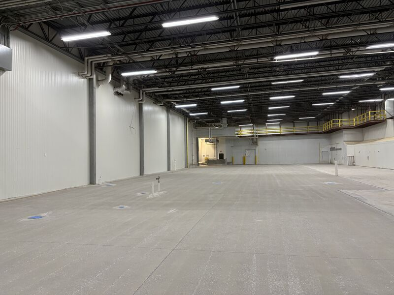
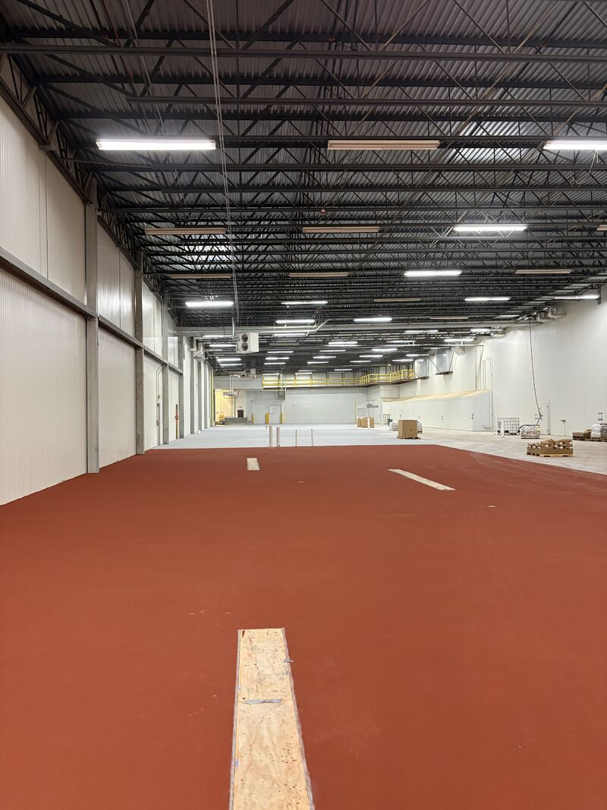
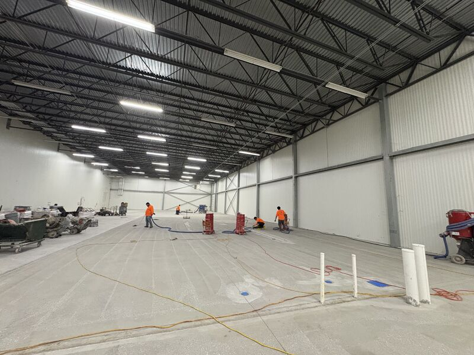
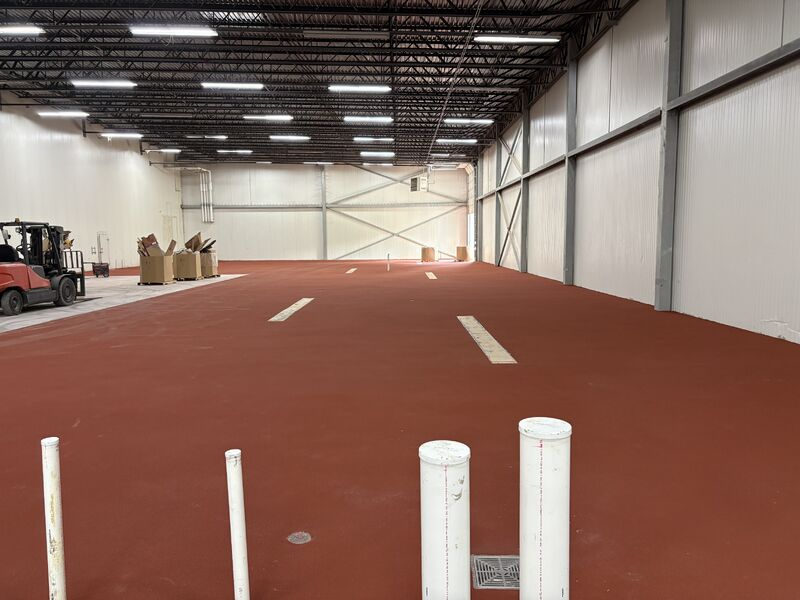

New construction gives a food plant one clean chance to get the floor right before equipment, traffic, and production schedules start closing in.

This phase covered roughly 20,000 square feet of SaniCrete STX 3/8 inch stainless steel reinforced cementitious urethane. The building was open, the lines were not in yet, and the slab was ready for a floor system built around food plant abuse from day one.
Why New Construction Is the Right Time
Once production equipment lands, every floor decision gets harder. Access tightens. Schedules compress. Details around equipment pads, traffic paths, and washdown areas become harder to handle cleanly.
Installing the system before startup gives the plant a seamless, thermal-shock-resistant floor before the room begins taking washdowns, traffic, sanitation chemicals, and years of production on top of it.



Built for the Production Life Ahead
SaniCrete STX is not decorative concrete. It is a heavy-duty cementitious urethane system built for thermal shock, washdowns, chemical exposure, and the physical wear that comes with food processing.
The point is simple: put the right floor in once, before the plant has to work around it.